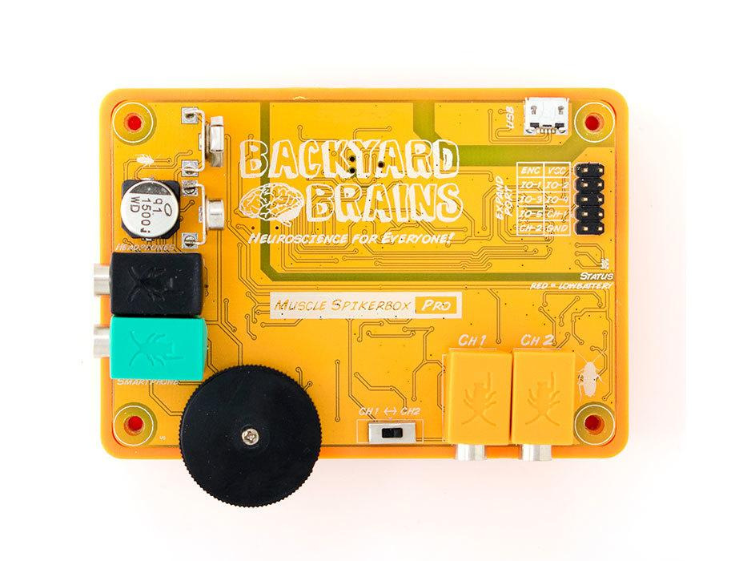

Firmware
STM32 firmware for EEG, EKG, EMG device: Human SpikerBox

Goal of this device was to make device based on STM32 that will record EMG, EKG, EOG, EMG and enable additional functionalities needed for conducting Neuroscience experiments
Target markets were schools and universities.
Device transmits data through composite USB and it is compatible with:
- Android
- iOS
- Windows
- macOS
- Linux
- Web.
Rare thing about this device was that it supports iAP2 protocol via lightning port for communication with iOS device.


Educational robot - software architect & firmware developer for ESP32
The goal of this project was to make a robot controlled by a computer model of a biological brain. Novel robot enabled students to perform computational neuroscience investigations by designing brains and observing their behavior. The robot is designed to serve as an educational tool for classes focused on Neuroscience and AI.
I have several roles on this project and one of them was to develop firmware for several versions of the robot prototype. First version of the firmware was made for ATMega328 and second version was made for ESP32-CAM board.
Main firmware features:
- real time streaming of HD video over via WiFi using web sockets
- measurement and real time streaming of sensor data (distance, encoders) via WiFi
- parsing and executing commands from host computer
- controlling motors
- controlling RGB LEDs
- generating sounds based on commands received from host computer
- establishing WiFi access point on robot
Additional roles on the project:
- research hardware and propose overall hardware architecture for the first prototype
- research and propose architecture for the first software solution that involved firmware, iOS mobile development, C++ desktop development and C++/MATLAB integration.
This is ongoing project that already received two NIH grants and successfully produced several prototypes. Robot was successfully tested in schools (please see the video below).
Furthermore, comprehensive information regarding the hardware and software can be found in the peer-reviewed paper:
Harris et al., Neurorobotics Workshop for High School Students Promotes Competence and Confidence in Computational Neuroscience
Frontiers in Neurorobotics · Feb 13, 2020
Firmware development for BLE controlled cyborg: RoboRoach
Goal of this project was to update and rewrite firmware for wirelessly controlled movement of a live cockroach by microstimulation of the antenna nerves.
On this project I had to update firmware for BLE TI CC2540 and to rewrite whole firmware for a new hardware platform based on Cypress PSoC 4 BLE (CY8C4247LQI-BL483).
Firmware was written in C an I used PSoC™ Creator IDE and IAR Embedded Workbench.
Beside firmware I was also updating iOS application in Objective C.
This was very unique and fun project! Check out the official product page here.


ATmega32U4 firmware development for recording of plant el. potentials
Goal of this project was to make a device based on ATmega32u4 that will record plant electric signals and send them to main application via USB or audio cable. Also, the device is able to stimulate electrically sensitive plants like Mimosa Pudica and generate plant movement.
Device is called Plant SpikerBox and it was intended to be used in schools and universities.
Device transmits data through CDC USB for Android, Windows, macOS, Linux and Web platforms and through audio cable for iOS devices. Data is sampled and sent in real time at 10ksamples/second.
Particular challenge for this device was to send low frequency <5Hz plant data via audio cable to iOS device. For that purposes we used AM modulation/demodulation of the signal.
I wrote complete firmware and collaborate/consulted in the hardware design and debugging phase. Since the recording of the plant electric potentials is a new topic we had to do a lot of R&D work in order to make reliable device.
Firmware is written in Arduino IDE and it is open source so that students in the schools/universities can modify it.
Also, I wrote Windows/macOS code in C++ and Objective-C code for iOS that supports communication with this device.


MSP430 firmware development for EMG recording: Muscle SpikerBox Pro
Goal of this project was to make a device based on MSP430 that will record EMG signal from human body. Device is intended to be used in schools and universities.
The device transmits data through HID and CDC USB and it is compatible with Android, Windows, macOS, Linux and Web platforms.
I wrote whole firmware on this project and collaborate/consulted in the hardware design and debugging phase. Firmware is written in C in Code Composer and it is open source on GitHub.
First version of this product was using HID packets to transmit real time electrophysiological measurements (40kB/s of samples). HID device class was used to avoid installation of drivers on supported platforms.
Second version of the product was using CDC device class to enable connection to web platform.
For the purpose of this project I made a new custom protocol for data formatting that enabled us to send multiple channels and messages embedded into stream of samples.
Also, I wrote Windows/macOS code in C++ that supports communication with this device.
Device needed to have several additional capabilities:
- firmware update capability so I had to implement update of the firmware procedure on the Windows app.
- auditory and visual stimulation for Neuroscience experiments
- event triggering that needs to be synchronized with signal with sub millisecond error
- expansion port that enable user to add additional measuring devices like accelerometers etc.

ATmega32U4 firmware development for ECG, EEG recording device

Goal of this project was to make a device based on ATmega32u4 that will record ECG (heart) and EEG (brain) signals and send them to main application via USB or audio cable.
Device is called Heart& Brains SpikerBox and it was intended to be used in schools and universities.
Device transmits data through CDC USB for Android, Windows, macOS, Linux and Web platforms and through audio cable for iOS devices. Data is sampled and sent in real time at 10ksamples/second.
Particular challenge for this device was to send low frequency <20Hz EEG data via audio cable to iOS device. For that purposes we used AM modulation/demodulation of the signal.
I wrote complete firmware and collaborate/consulted in the hardware design and debugging phase. Firmware is written in Arduino IDE and it is open source so that students in the schools/universities can modify it.
Also, I wrote Windows/macOS code in C++ and Objective-C code for iOS that supports communication with this device.


MSP430 firmware development for Neuron SpikerBox Pro

Goal of this project was to make a device based on MSP430 that will record living neurons. The device transmits data through HID and CDC USB and it is compatible with Android, Windows, macOS, Linux and Web platforms.
I wrote whole firmware on this project and collaborate/consulted in the hardware design and debugging phase. Firmware is written in C in Code Composer.
First version of this product was using HID packets to transmit real time electrophysiological measurements (40kB/s of samples). HID device class was used to avoid installation of drivers on supported platforms.
Second version of the product was using CDC device class to enable connection to web platform.
Data stream that is sent from device to the host app is formatted according to a custom protocol that I made and that enables sending of the embedded messages inside a real time sample stream.
Also, I wrote Windows/macOS code in C++ that supports communication with this device.
Device needed to have several additional capabilities:
- firmware update capability so I had to implement update of the firmware procedure on the Windows app.
- auditory and visual stimulation for Neuroscience experiments
- event triggering that needs to be synchronized with signal with sub millisecond error
- expansion port that enable user to add additional measuring devices like accelerometers etc.